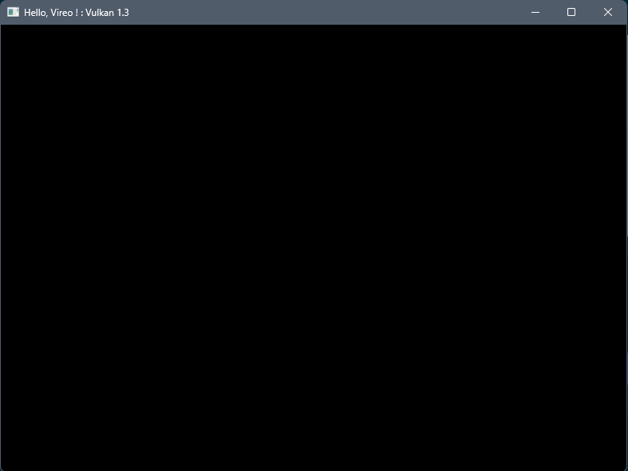

|
Vireo
0.0
Vireo 3D Rendering Hardware Interface
|
|
Vireo
0.0
Vireo 3D Rendering Hardware Interface
|
This tutorial will teach you the basics of using the Vireo Rendering Hardware Interface. Vireo is an open source library written in modern C++ that implements a common abstraction layer over multiple 3D graphics APIs.
Like modern graphics API, Vireo is a low-level library but is designed to be less verbose, at the price of reduced flexibility.
This tutorial assumes that the reader already knows the basic concepts of the modern graphics API like Vulkan or DirectX 12, like pipelines, descriptors, resources, buffers, barriers, ...
Sources of the tutorial are available at https://github.com/HenriMichelon/vireo_tutorial_1
Since Vireo currently only supports Microsoft Windows this tutorial assumes that you use this operating system.
We will be using CMake which means that you can use Microsoft Visual Studio or Jetbrains CLion to edit and compile your code. Note that you need to install the CMake component for Visual Studio.
Since Vireo implements a DirectX 12 backend under Windows you need to install Microsoft Visual C++ 2022 (MSCV 19+). Vireo can be compiled with LLVM but only with the Vulkan back-end alone.
For DirectX 12 install the "Game Development with C++" component for Visual Studio.
For Vulkan install the Vulkan SDK
The CMake scripts will automatically install the GLM library used in this tutorial
Finally, clone the Vireo RHI repository somewhere in your computer.
Clone the Vireo template project somewhere in your computer then adds a .env.cmake file containing the following variable at the root of your project:
set(VIREO_PROJECT_DIR "path_to_the_cloned_vireo_directory")
In the src directory creates :
A new MyApp.ixx interface file for your application :
module;
#include "Libraries.h"
export module myapp;
import app;
export class MyApp : public Application {
public:
void onInit() override;
void onRender() override;
void onResize() override;
void onDestroy() override;
}
A new MyApp.cpp implementation file :
module;
#include "Libraries.h"
module myapp;
void MyApp::onInit() {
}
void MyApp::onRender() {
}
void MyApp::onResize() {
}
void MyApp::onDestroy() {
}
And a new MyAppMain.cpp source file :
#include "Macros.h" import myapp; APP(std::make_shared<MyApp>(), L"Hello, Vireo !", 1280, 720);
Update the CMakeLists.txt file by uncommenting the last part :
...
#######################################################
set(MY_TARGET_SRC
${SRC_DIR}/MyApp.cpp
${SRC_DIR}/MyAppMain.cpp)
set(MY_TARGET_MODULES ${SRC_DIR}/MyApp.ixx)
build_target(myapp "${MY_TARGET_SRC}" ${MY_TARGET_MODULES})
Then reload the CMake project and build the myapp target.
Execute the application (from the project root directory), it will display the graphic API selection dialog :
Select an API and an empty window will be displayed :
The Vireo class encapsulate the creation of the various objects needed by the graphics API such as the physical adapter and the logical device. The instance of the Vireo class is stored in the vireo field of the base Application class of your project. The creation of the instance is done in the os-specific main class (Win32Application for Windows) of your project after the user selects the runtime backend :
The Vireo class is the main class of the library; You need an instance of this class to create all the library objects.
Most operations performed with graphics API, like draw commands and memory operations, are asynchronously executed by submitting them to a SubmitQueue. Queues are allocated from command types, where each type supports a specific set of operations in its queues. For example, there could be separate queue families for graphics, compute and memory transfer operations.
Add a submission queue field to your application :
...
private:
std::shared_ptr<vireo::SubmitQueue> graphicQueue;
};
This queue will be used for all graphics commands and for presenting the result in the window.
Create it in the onInit() method :
void MyApp::onInit() {
graphicQueue = vireo->createSubmitQueue(vireo::CommandType::GRAPHIC);
}
and in the onDestroy() method add the code to wait for all the submitted commands to finish before closing the application :
void MyApp::onDestroy() {
graphicQueue->waitIdle();
}
The swap chain is a collection of frame buffers. Its basic purpose is to ensure that the image that we're currently rendering to is different from the one that is currently on the screen. This is important to make sure that only complete images are shown. Every time we want to draw a frame we have to ask the swap chain to provide us with an image to render to. When we've finished drawing a frame, the image is returned to the swap chain for it to be presented to the screen at some point.
We need a synchronization mechanism when we use a swap chain since the modern graphics API executes commands asynchronously: we have to wait for the GPU to finish the submitted work before reusing a frame buffer.
The CPU/GPU synchronization is done with a Fence object. Since we can have multiple frames in flight (the GPU can render in multiple frame buffers in parallel), we need one Fence per frame buffer.
Add a FrameData struct and a vector of FrameData to your application:
static constexpr auto FRAMES_IN_FLIGHT{2};
struct FrameData {
std::shared_ptr<vireo::Fence> inFlightFence;
};
std::vector<FrameData> framesData{FRAMES_IN_FLIGHT};
Create the fences after the queue creation in the onInit() method :
for (auto& frameData : framesData) {
frameData.inFlightFence = vireo->createFence(true);
}
It's time to create the swap chain. Add a SwapChain field to your application interface:
std::shared_ptr<vireo::SwapChain> swapChain;
We need the window handle to create the swap chain. The window is created by the Win32Application and the os-specific handle is stored in the windowHandle field of the base Application class. We can use this field to create the swap chain, just after the graphicQueue creation, in the onInit() method :
swapChain = vireo->createSwapChain(
vireo::ImageFormat::R8G8B8A8_SRGB,
graphicQueue,
windowHandle,
vireo::PresentMode::VSYNC,
FRAMES_IN_FLIGHT);
The swap chain needs to be recreated each time the window is resized :
void MyApp::onResize() {
swapChain->recreate();
}
We have to wait for the last frame presentation to be finished before closing the application :
void MyApp::onDestroy() {
graphicQueue->waitIdle();
swapChain->waitIdle();
}
Get the frame data corresponding to the current frame in the onRender() method, acquire the next frame buffer (while waiting for the frame buffer to be ready), then present it into the window :
void MyApp::onRender() {
const auto& frameData = framesData[swapChain->getCurrentFrameIndex()];
if (!swapChain->acquire(frameData.inFlightFence)) { return; }
// commands will be recorded and submitted here
swapChain->present();
swapChain->nextFrameIndex();
}
We can't execute the application now because the swap chain image needs to be ready to be presented by the GPU before calling present(). To make this frame buffer ready to be presented, we have to use a pipeline barrier to synchronize resource like image between the different stages of a GPU pipeline.
A pipeline barrier is a GPU synchronization primitive that guarantees that any writes performed by those earlier stages are made visible (and available) to reads or writes in the later stages.
A pipeline barrier is created on the GPU with the help of a CommandList and a command list is allocated by a CommandAllocator.
The command list will also be used to record pipeline and drawing commands for execution by the GPU.
Since we can render multiple frames in flight, we need one allocator and one list per frame:
...
struct FrameData {
std::shared_ptr<vireo::Fence> inFlightFence;
std::shared_ptr<vireo::CommandAllocator> commandAllocator;
std::shared_ptr<vireo::CommandList> commandList;
};
...
Add the creation code after the fence creation :
...
for (auto& frameData : framesData) {
frameData.inFlightFence = vireo->createFence(true);
frameData.commandAllocator = vireo->createCommandAllocator(vireo::CommandType::GRAPHIC);
frameData.commandList = frameData.commandAllocator->createCommandList();
}
Command lists need to be :
We will do that between acquire() and present():
...
frameData.commandAllocator->reset();
// commands will be recorded and submitted here
graphicQueue->submit(
frameData.inFlightFence,
swapChain,
{frameData.commandList});
...
Recording commands in the command list is done in a recording session. A session starts with begin() and ends with end(), between reset() and submit() :
... frameData.commandList->begin(); // commands will be recorded and submitted here frameData.commandList->end(); ...
We can finally add the pipeline barriers for the current swap chain frame buffer between begin() and end():
frameData.commandList->barrier(
swapChain,
vireo::ResourceState::UNDEFINED,
vireo::ResourceState::RENDER_TARGET_COLOR);
// commands will be recorded and submitted here
frameData.commandList->barrier(
swapChain,
vireo::ResourceState::RENDER_TARGET_COLOR,
vireo::ResourceState::PRESENT);
The application can be started to display a black window (since we never write data into the frame buffer): 
A render pass consists of a list of commands submitted to the GPU to draw into various frame buffers also named attachments. In this tutorial we will directly draw into the swap chain frame buffers.
To configure the attachments and the render pass we have to create a RenderingConfiguration. Add a configuration object to your application class:
...
vireo::RenderingConfiguration renderingConfig {
.colorRenderTargets = {{
.clear = true,
.clearValue = {0.0f, 0.2f, 0.4f, 1.0f}
}}
};
...
We declare in this object one frame buffer as a color attachment. The only parameter for this attachment is the RGBA color used to clear the frame buffer before drawing (we need it to be different from the default black color to visually control that the frame buffer clearing is effective).
Since we will render directly into the swap chain we need to set the color attachment target just after the swap chain creation with createSwapChain():
... renderingConfig.colorRenderTargets[0].swapChain = swapChain; ...
In the onRender() method we can start the render pass between the swap chain barriers:
... frameData.commandList->beginRendering(renderingConfig); // commands will be recorded and submitted here frameData.commandList->endRendering(); ...
After the white then the black window we now have a blue window : 
A viewport basically describes the region of the framebuffer that the output will be rendered to. This will almost always be (0, 0) to (width, height).
While viewports define the transformation from the image to the framebuffer, scissor rectangles define in which regions pixels will actually be stored. Any pixels outside the scissor rectangles will be discarded by the rasterizer. They function like a filter rather than a transformation (image is from the Vulkan tutorial):

We need to record the commands to set the viewports & scissors at the start of the render pass :
... frameData.commandList->beginRendering(renderingConfig); frameData.commandList->setViewport(swapChain->getExtent()); frameData.commandList->setScissors(swapChain->getExtent()); // commands will be recorded and submitted here ...
Our triangle vertices will be hard-coded into the application. Add the struct describing a vertex composed of a XYZ position and an RGB color in your class interface:
struct Vertex {
glm::vec3 pos;
glm::vec3 color;
};
Add the triangle data with a different color for each vertex, after the Vertex struct:
std::vector<Vertex> triangleVertices{
{ { 0.0f, 0.5f, 0.0f }, { 1.0f, 0.0f, 0.0f } },
{ { 0.5f, -0.5f, 0.0f }, { 0.0f, 1.0f, 0.0f } },
{ { -0.5f, -0.5f, 0.0f }, { 0.0f, 0.0f, 1.0f } }
};
The next step is to tell the graphic API how to pass this data format to the vertex shader once it's been uploaded into GPU memory. We have to describe each field of the Vertex struct using VertexAttributeDesc, after the triangle data:
const std::vector<vireo::VertexAttributeDesc> vertexAttributes{
{"POSITION", vireo::AttributeFormat::R32G32B32_FLOAT, offsetof(Vertex, pos)},
{"COLOR", vireo::AttributeFormat::R32G32B32_FLOAT, offsetof(Vertex, color)}
};
This vector is used to create the vertex layout for the future pipeline. Add the following code before the for loop in the onInit() method:
...
const auto vertexLayout = vireo->createVertexLayout(sizeof(Vertex), vertexAttributes);
for (auto& frameData : framesData) {
...
We are done with the vertex layout. Now we have to upload the vertex data into the VRAM in a VERTEX buffer. Add the buffer field to your application :
std::shared_ptr<vireo::Buffer> vertexBuffer;
In the onInit() method, just before the createVertexLayout() line, add the buffer creation :
vertexBuffer = vireo->createBuffer( vireo::BufferType::VERTEX, sizeof(Vertex), triangleVertices.size());
We will use a TRANSFER command list to upload the vertex data into the VRAM. You can use a GRAPHICcommand list for that but the TRANSFER command buffers and submit queues can take advantage of DMA transfers.
In the onInit() method, just after the buffer creation add the command allocator and command list creation :
const auto uploadCommandAllocator = vireo->createCommandAllocator(vireo::CommandType::TRANSFER); const auto uploadCommandList = uploadCommandAllocator->createCommandList();
Followed by the recording of the upload command :
uploadCommandList->begin(); uploadCommandList->upload(vertexBuffer, &triangleVertices[0]); uploadCommandList->end();
Then the submission of the commands using a TRANSFER submit queue :
const auto transferQueue = vireo->createSubmitQueue(vireo::CommandType::TRANSFER);
transferQueue->submit({uploadCommandList});
Since the upload operation is asynchronous, we have to wait for the command to finish before terminating the onInit() method. Add the following code at the end of the method :
transferQueue->waitIdle(); uploadCommandList->cleanup();
By adding the waitIdle() at the end of the method, the upload operation will be executed while we continue to create our pipeline.
Note that we call the cleanup() method to clear the temporary (staging) buffer used for the host-to-device copy of the vertex data. The asynchronous nature of the operating means that we have to wait for the end of the operation to free the host-visible allocated memory. This is done automatically in the command list destructor, but we added this call in the tutorial for clarification.
The graphics pipeline is the sequence of operations that take the vertices and textures of your meshes all the way to the pixels in the render targets. You can learn more about graphics pipelines in the Vulkan tutorial. To create a graphic pipeline, we need :
We will use the Slang shader language to write our shaders. By using Slang we will have only one code for all the supported graphics API.
The CMakeLists.txt file supports the compilation of the shaders in the SPIR-V and DXIL intermediates formats.
Add a new shaders directory under the src directory, then add a new triangle_color.slang file into the src/shaders directory with the following content :
struct VertexInput {
float3 position : POSITION;
float3 color : COLOR;
};
struct VertexOutput {
float4 position : SV_POSITION;
float3 color : COLOR;
};
VertexOutput vertexMain(VertexInput input) {
VertexOutput output;
output.position = float4(input.position, 1.0) ;
output.color = input.color;
return output;
}
float4 fragmentMain(VertexOutput input) : SV_TARGET {
return float4(input.color, 1.0);
}
The POSITION and COLOR attributes in the VertexInput struct refers to the fields of the vertexAttributes array. Since Vulkan does not use textual attributes names but binding indices the fields must be in the same order in the struct and in the array.
The fragment shader uses the vertex color to produce a nice RGB gradient (the GPU calculates the color interpolation for each fragment/pixel from the vertices colors).
Reload the CMake project to add the new shader code to the list of shaders to compile then build the shaders target.
If you look into the shaders directory in the root of your project you will see four files with the compiled vertex and fragment shaders, both in SPIR-V and DXIL :

Now we can load the shaders in our onInit() method, just after the vertex layout creation :
...
const auto vertexLayout = vireo->createVertexLayout(sizeof(Vertex), vertexAttributes);
const auto vertexShader = vireo->createShaderModule("shaders/triangle_color.vert");
const auto fragmentShader = vireo->createShaderModule("shaders/triangle_color.frag");
...
The graphic pipeline configuration is described in a GraphicPipelineConfiguration struct.
For rendering in a color attachment you need :
Add a basic configuration in your application with only one color attachment :
vireo::GraphicPipelineConfiguration pipelineConfig {
.colorRenderFormats = {vireo::ImageFormat::R8G8B8A8_SRGB},
.colorBlendDesc = {{}}
};
Then add the pipeline field :
std::shared_ptr<vireo::Pipeline> pipeline;
and the pipeline creation just after the shader modules creation in onInit():
pipelineConfig.resources = vireo->createPipelineResources(); pipelineConfig.vertexInputLayout = vertexLayout; pipelineConfig.vertexShader = vertexShader; pipelineConfig.fragmentShader = fragmentShader; defaultPipeline = vireo->createGraphicPipeline(pipelineConfig);
We use an empty pipeline resource object since our shader only uses the vertex input described by the vertex layout.
It's time to draw our triangle!
Add the drawing commands recording in the onRender() method between setScissors() and endRendering() :
frameData.commandList->bindPipeline(pipeline); frameData.commandList->bindVertexBuffer(vertexBuffer); frameData.commandList->draw(triangleVertices.size());
If you did everything correctly up to this point, then you should now see something resembling the following when you run your program.
With Vulkan :
With DirectX :
Explore the Vireo RHI Samples repository for other examples (uniforms, push constants, compute pipeline, MSAA, depth pre-pass, post-processing effects, ...)
 2.0.0
2.0.0